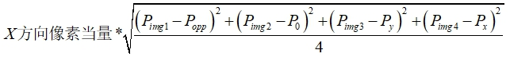
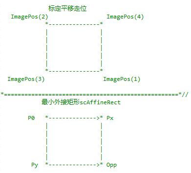
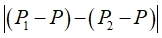

3点X轴平移标定：X轴或XD轴平台的平移标定结果计算。
3点Y轴平移标定：Y轴或YD轴平台的平移标定结果计算。
3点D轴旋转标定：XD轴、YD轴或XYD轴平台的旋转标定结果计算。

本工具用于运动平台的相机的标定，可以计算出相机和平台坐标系的关系，相机的像素当量等，标定计算一般分为平移标定和旋转标定，因此需要两个标准标定计算工具，其中一个用于平移计算，另外一个用于旋转计算，一般多用于对位应用。标准标定计算工具分为平移标定和旋转标定，可以在属性窗口进行选择。
在标准标定过程中，通过一定步数的标定运动（相应轴位置由标准标定轴位置获取工具计算得出），可以得到每一拍照位置下特征点图像坐标组成的坐标向量。该坐标向量与已知的交互运动步长一起作为输入，标准标定计算工具即可进行标定计算，得到图像坐标系与平台坐标系的旋转平移映射关系。
典型的平台为XYD平台，标定过程为7步标定：初始位置，右下，左上，左下，右上，初始位置，顺时针旋转，逆时针旋转。在每个位置都会进行拍照定位，前5个位置的定位结果，用于进行平移标定计算，标定计算类型属性选择“5点XY平移标定”；后3个位置的定位结果用于旋转标定计算，标定计算类型属性选择“3点D轴旋转标定”。
如果平台为XD平台，标定过程为5步标定：初始位置，右，左，初始位置，顺时针旋转，逆时针旋转。在每个位置都会进行拍照定位，前3个位置的定位结果，用于进行平移标定计算，标定计算类型属性选择“3点X平移标定”；后3个位置的定位结果用于旋转标定计算，标定计算类型属性选择“3点D轴旋转标定”。
输入需要每个位置的定位结果，即图像坐标向量；标定过程中的移动补偿，即标定交互运动步长。对于旋转标定还需要输入平移标定计算的标定结果。
| 分类 | 参数名称 | 参数描述 |
|---|---|---|
| 属性窗口 | 标定计算类型 | 5点XY轴平移标定：XY轴或XYD轴平台的平移标定结果计算。 3点X轴平移标定：X轴或XD轴平台的平移标定结果计算。 3点Y轴平移标定：Y轴或YD轴平台的平移标定结果计算。 3点D轴旋转标定：XD轴、YD轴或XYD轴平台的旋转标定结果计算。 |
| 图像窗口 | 无 | 无 |
| 数据链 | 图像坐标向量 | 由每一次标定运动后定位的特征点图像坐标构成的向量。 |
| 标定交互运动步长 | 标定运动时平台各轴的运动步长。 | |
| 输入标定结果 | 只在标定计算类型为3点D轴旋转标定时使用，当平台轴分别为XD轴、YD轴、XYD轴时，输入的分别为3点X轴平移、3点Y轴平移、5点XY轴平移标定结果。 |
|
| 高级界面 | 无 | 无 |
| 分类 | 参数名称 | 参数描述 |
|---|---|---|
| 监视窗口 | 图像坐标向量 | 由每一次标定运动后定位的特征点图像坐标构成的向量。 |
| 标定交互运动步长 | 标定运动时平台各轴的运动步长。 | |
| 标定结果 | 输出工具的相应标定结果。 | |
| 图像坐标 | 旋转中心点的图像坐标。 | |
| 平台坐标 | 旋转中心点的平台坐标。 | |
| 机械XY轴夹角 | 机构X轴和Y轴的夹角。 | |
| 平移误差 | 标定平移走位的4个位置和其最小外接矩形之间的RMS。 |
|
| 旋转误差 | 旋转误差。 |
|
| 执行结果 | 工具执行结果。 | |
| 执行时间 | 工具执行时间。 | |
| 图像窗口 | 无 | |
| 数据链 | 标定结果 | 输出工具的相应标定结果，供后序工具使用，同监视窗口参数。 |
| 图像坐标 | 旋转中心点的图像坐标，供后序工具使用，同监视窗口参数。 | |
| 平台坐标 | 旋转中心点的平台坐标，供后序工具使用，同监视窗口参数。 | |
| 机械XY轴夹角 | 机构X轴和Y轴的夹角，同监视窗口参数。 | |
| 平移误差 | 标定平移走位的4个位置和其最小外接矩形之间的RMS，同监视窗口参数。 | |
| 旋转误差 | 旋转误差，同监视窗口参数。 |
只在标定计算类型为3点D轴旋转标定时使用。
这是由于当平台轴为XD轴、YD轴、XYD轴时，标准标定计算流程采用平移标定计算工具与D轴旋转标定计算工具组合的形式来实现整个标定计算，即采用两个标准标定计算工具来完成整个功能。后一个D轴旋转标定计算类型的工具需要将上一个平移标定计算工具的平移标定结果作为输入参数。
标定平移走位的4个位置和其最小外接矩形之间的RMS。即


设顺时针旋转后的图像坐标转换到平台坐标为P1，逆时针旋转后的图像左边转换到平台坐标为P2，初始位置的图像坐标转换到平台坐标为P，则旋转误差为：

| 平台类型 | 工具参数选择与组合 |
|---|---|
| XYD | 5点XY轴平移标定+3点D轴旋转标定 |
| XY | 5点XY轴平移标定 |
| XD | 3点X轴平移标定+3点D轴旋转标定 |
| YD | 3点Y轴平移标定+3点D轴旋转标定 |
| X | 3点X轴平移标定 |
| Y | 3点Y轴平移标定 |
参见“\Samples\标准标定+基准两点对位.gvp”